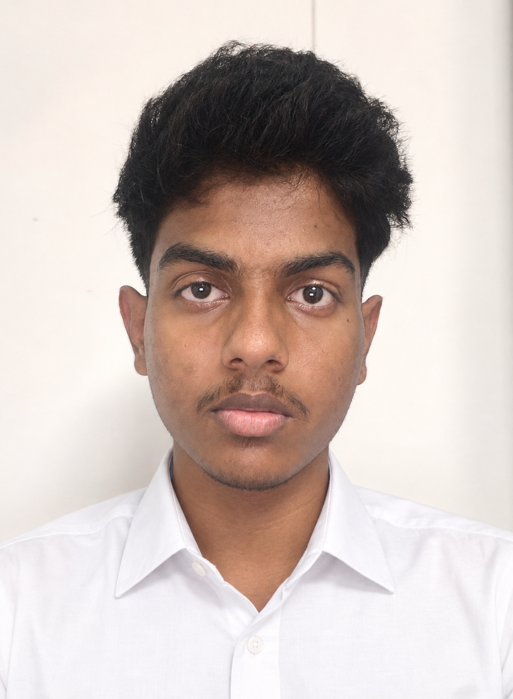
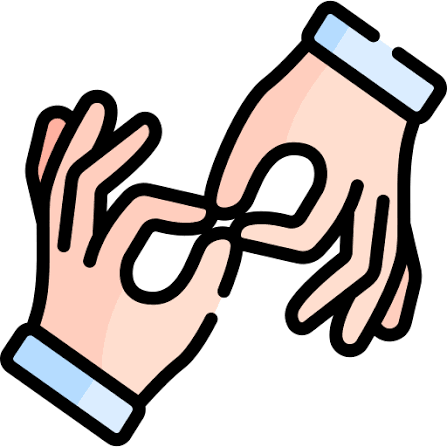

HEYY THEREE! 👋
A first-year student at Alard University, Pune, studying BTech in Computer Science Engineering with a specialization in Artificial Intelligence. I enjoy exploring technology, learning programming and turning interesting ideas into projects.
Contact Me
I'm someone who enjoys figuring out how things work, exploring new ideas and learning something new every day. My curiosity about technology led me to Computer Science, where I'm currently exploring programming and Artificial Intelligence.
Outside academics, I enjoy music, gaming, cricket and discovering new places. I also like working with people, sharing ideas and turning random thoughts into something useful.
I'm still at the beginning of my journey, but my goal is to keep experimenting, improve my skills and build technology that makes a difference.
Degree: BTech CSE (AI)
College: Alard University
Location: Pune
Year: First Year
Creating webpage structures
Styling and designing websites
Basic programming and logic
Learning programming fundamentals
Teamwork and communication

A project that aims to recognize hand gestures and convert them into text messages using technology. It is designed to make communication easier for people who use sign language.
View on GitHubHave a question or want to connect? Feel free to contact me!